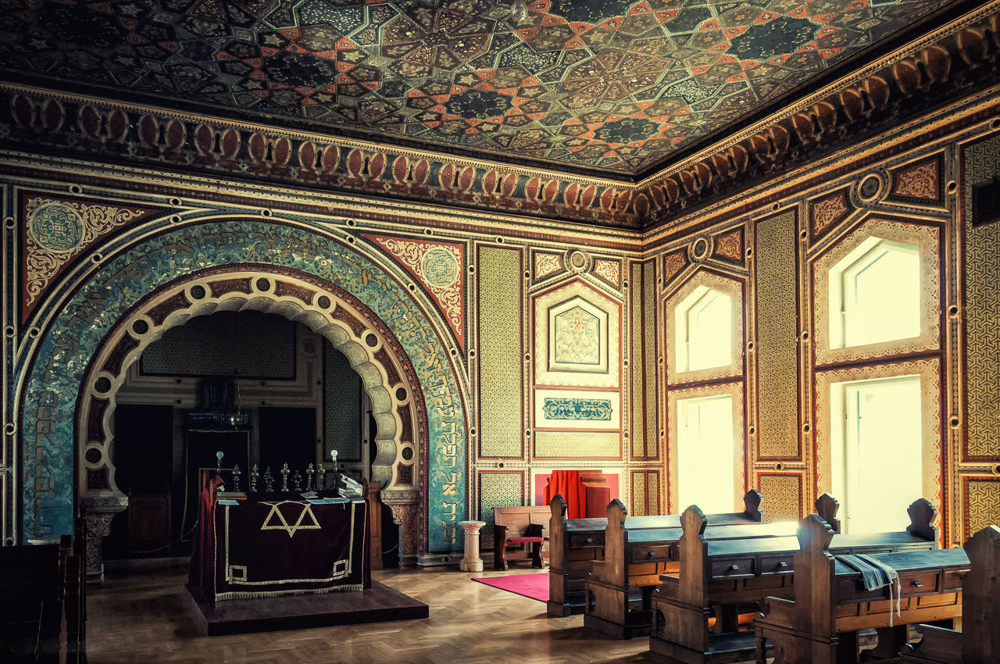

Ness & Mak's Wedding
This website is a bit of a work in progress, much like the wedding itself. We'll update it as we go!
Itinerary
Tuesday
Everyone’s welcome to a ‘welcome drinks’ and a light buffet on Tuesday evening. It’ll be from 7:30pm and in central Sarajevo. Exact time and place to be confirmed!
Wednesday
We’ll be arranging a walking tour of Sarajevo on Wednesday, for those who want to join. We’ve shared some restaurant recommendations for your Wednesday evening too.
Thursday
It’s wedding day! We’ll be getting married in the afternoon. The starting point is in walking distance from all central Sarajevo hotels, or a very short taxi ride away.
Friday
Our time together comes to an end. We’ll be arranging buses to Croatia, for anyone who fancies a short beach holiday to finish off the week. (Exact details on this to follow.)
Wedding
The day
We will be getting married at Sarajevo synagogue. It is the first wedding there for around 30 years. We will be having a Jewish wedding ceremony. We expect the wedding ceremony to start in the early afternoon.
After the ceremony and Kiddush in the Synagogue garden, we will head to Hotel Europe for our wedding party. The Hotel is a 10 minute walk down the road, in the centre of town.
The wedding will finish around 12:30 / 1:00 a.m.
Dress Code
Sometimes referred to as lounge suits and cocktail dresses, otherwise known as fun and a little bit fancy. No black tie or anything like that required. But also probably not tracksuit bottoms. Colourful suits and dresses welcome.
Travel
All flights to Sarajevo are indirect at the moment (often via Zurich, Vienna or Frankfurt).
Wizz Air used to fly direct from London, but unfortunately these flights were unceremoniously halted this winter just after we had confirmed our plans. There are rumours that Ryanair will pick up the mantle, but it hasn’t been confirmed yet. So your guess is as good as ours.
It might be worth booking your indirect flights now to grab what you can, or you might want to see what happens in the next few months and see if any airline picks up the direct London-Sarajevo flight path. (Although this would be the gamblers' strategy).
Hotels
The following hotels may be good options for your stay in Sarajevo, although there's lots of other options too!
Hotel Europe
https://www.hoteleuropegroup.ba/ | Map
You can enjoy a 30% discount discount as guests for our wedding. You just need to let the hotel know that you are coming for “Mak and Vanessa’s Wedding on 15th June”. This one can't be beat for convenience (given it is also the venue).
The hotel is a hybrid of an older Austro-Hungarian section and a slightly garish modern section. If luck is on your side your room will be in the older part. (We have asked the hotel to set aside some rooms in the older part for our guests.)
Isa Begov Hamam i Hotel

https://isabegovhotel.com/ | Map
This is mid range and great because it has a hamam spa in the basement where you can pay for treatments and make free use of the sauna / steam rooms. Also very close to the wedding and centre of town.
Halvat Hotel
https://www.halvat.com.ba/ | Map
We stayed here last year. It’s quite small and simple, but very comfortable - and the owner is exceptionally nice and the hotel has a very interesting and inspiring story. It's also right in the centre of town too.
Kibe Mahala
https://www.restaurantkibe.com/ | Map
Full disclosure we haven’t actually stayed here, but we have eaten at the restaurant that this place is known for (and it was excellent). It's up on a very steep hill, so you’d have to either have strong legs or be happy to take a taxi to get back, but it seemed great and has beautiful views of the city.
Tips, things to do, etc...

Food
Ćevapi
The unassuming Ćevap: a simple dish of grilled meatballs, served with bread, onion and sour cream. This dish may not perhaps seem to merit being a national obsession, film subject or hallmark of Sarajevo. But it is.
Where to find the best ćevapi is a debate which has never ended. If you want to join it, you can try one of the places below (which are all right next to each other):
Pita
Not the delicious circular bread from the middle east. No, pita is in fact a family of dishes: pastries made from a thin flaky dough with a variety of different possible fillings. It's similar to borek (and in fact "burek" in Bosnia refers specifically to pita with a meat filling).
The most common fillings are cheese ("sirnica"), spinach ("zeljanica") or meat (the aforementioned "burek"). A great place to try it is the restaurant Sač.
Restaurants
All of the below are pretty popular, so booking in advance is probably necessary.
Kibe Mahala
https://www.restaurantkibe.com/ | Map
Also in the hotel recommendations, but the restaurant here is the main event. Great views and a specialist in more traditional and robust fare (meaning also fewer vegetarian options unfortunately).
Dveri
Right in the centre of old town, a really cosy place with great food and wine.
The Singing Nettle
https://www.thesingingnettle.com/ | Map
Modernised spins on traditional dishes. Lots of vegetarian options available here (and a somewhat vegetarian decor to match).
Places to go
Old Town

The best place to go wandering around.
Cable car and mountains
Amazing views and great walks around the mountains just outside of Sarajevo. You can walk all the way back down to town if you fancy a longer one, going past the abandoned old winter Olympics bobsleigh track.
Other tips
You can pay with card in most places these days, but for some things (e.g. taxis) it's pretty much cash only, so it's always a good idea to have a bit of cash.
You will likely want a taxi from the airport. It's hard to get BAM (Bosnian Marks) outside of Bosnia, so your best bet would be to get a small amount at the airport. (A taxi from the airport should cost ~20 BAM, but some cheeky drivers may try to charge you more.)
BAM is fixed to the Euro at roughly 2 BAM = 1€, meaning that it's currently 10 BAM = £4.50. In town you can withdraw from cash machines. Some will charge but there are others which don't, so you may need to shop around a bit to avoid paying a fee.
Sarajevo is usually pretty warm in June, but it's also usually pretty unpredictable! It's probably not a bad idea to bring some slightly warmer clothes and perhaps an umbrella just in case.
For the day of the wedding, check the forecast but there's a good chance you might want to bring a light jacket for the evening.
For reading place names and the like, Bosnian sounds pretty much like english. Except:
- "j" actually sounds more like "y" or "i" (kind of like the "y" in "yesterday" or "spy").
- A "dž" sounds like "j". (Leading to hilarious transliterations of "James Dean" as "Džejms Din")
- A "d" with a bar in it (đ) sounds kind of like a "g", like in "geo".
- "i" often sounds more like "e". (Like the role "i" plays in "pita").
- "c"s wearing hats (ć or č) are "ch" sounds (like "chat").
- An s with a hat (š) is a "sh" sound (like "shoe").
After the wedding
We will be travelling onwards to Croatia for a few days at the seaside (to relive our first holiday together, back in 2014) - most likely chartering a bus to get us there. Friends are welcome to join if anyone would like a short beach holiday after the wedding. More details will be shared in the coming months.
Gifts ⛔
Your presence is our present, that's all we really want!
RSVP
Please RSVP to our email address hello.manessa@gmail.com.
Please also let us know whether:
- You can make the welcome drinks on Tuesday evening
- You would be interested in travelling with us to Croatia after
We'd appreciate if you could reply by April 1st (not fooling), so we can confirm numbers.